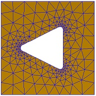
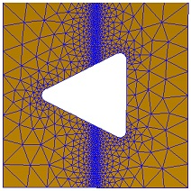
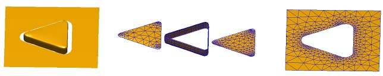
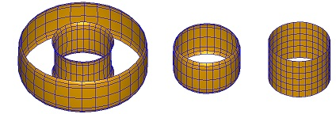

The polygon3 class
The polygon3 class builds upon the polygon and edgeprofile classes and allows to extrude 2D polygons.
Contents
Initialization
% add z-value to 2d polygon POLY2 poly = polygon3( poly2, z ); % add edge function or refine function to POLY3 poly = polygon3( poly2, z, 'edge', edge, 'refun', refun );
In the initialization, the following parameters and properties are used
- poly2 two-dimensional polygon
- z z-value of polygon,
- 'edge' edge profile, and
- 'refun' a refine function for creating plates.
Methods
There exist several methods that are useful in setting up extruded particles or can be used to manipulate the polygon3 objects.
% set Z value, direction DIR, or edge profile EDGE of polygon poly = set( poly, 'z', z ); % make plate out of one or several polygons, using edge rounding-off [ p, poly ] = plate( [ poly1, poly2 ] ); % shift polygon to outside poly = shiftbnd( poly, dist ); % make vertical ribbon around particle, using edge rounding-off p = vribbon( poly ); p = vribbon( poly, z ); % make horizontal ribbon around polygon p = hribbon( poly, d );
Examples
We first consider polygon without the edge argument
% set up POLYGON3 objects poly1 = polygon3( round( polygon( 3, 'size', [ 10, 10 ], 'dir', -1 ) ), 0 ); poly2 = polygon3( polygon( 4, 'size', [ 20, 20 ] ), 0 ); % make plate p = plate( [ poly1, poly2 ] ); % plot plate plot( p, 'EdgeColor', 'b' );

We can use an additional refun function to refine the plate at specific points. For a discussion of the refine function see the description and demo files of the Mesh2d toolbox.
% refine function refun = @( pos, d ) 0.2 + abs( pos( :, 1 ) ); % make plate p = plate( [ poly1, poly2 ], 'refun', refun );

We next show how to make the different parts for a nanotriangle, and to make an additional plate around the nanoparticle. Because of the edgeprofile parameter, the edges of the extruded polygon become rounded off.
% set up edge profile edge = edgeprofile( 2 ); % set up POLYGON3 objects poly = polygon3( round( polygon( 3, 'size', [ 10, 10 ] ) ), edge.zmax, 'edge', edge ); % make upper plate % we need the output POLY argument because additional points have been added to the polygon [ up, poly ] = plate( poly ); % we next make the vertical ribbon around the particle ribbon = vribbon( poly ); % lower plate lo = plate( set( poly, 'z', edge.zmin ) ); % we finally set the z-value of the polygon to zero and shift it outwards poly = shiftbnd( set( poly, 'z', 0 ), 1 ); % additional polyon for plate around triangular nanoparticle poly2 = polygon3( polygon( 4, 'size', [ 20, 20 ] ), 0 ); % make plate around nanoparticle p = plate( [ poly, poly2 ] ); % plot all particles together plot( [ up; ribbon; lo; p ] ); % plot particles separately plot( [ shift( up, [ 20, 0, 0 ] ); shift( ribbon, [ 30, 0, 0 ] ); ... shift( lo, [ 40, 0, 0 ] ); shift( p, [ 60, 0, 0 ] ) ], 'EdgeColor', 'b' );

In the final example we investigate the dir argument of the polygon class and the use of different edge profiles.
% set up edge profile edge = edgeprofile( 15 ); % polygons for inside and outside of torus-shaped particle poly1 = polygon3( polygon( 30, 'size', [ 20, 20 ], 'dir', -1 ), edge.zmin, 'edge', edge ); poly2 = polygon3( polygon( 30, 'size', [ 40, 40 ], 'dir', +1 ), edge.zmin, 'edge', edge ); % extrude ribbon at inside and outside rib1 = vribbon( poly1 ); rib2 = vribbon( poly2 ); % change direction of inner polygon and extrude it rib3 = vribbon( set( poly1, 'dir', 1 ) ); % add sharp edge profile to inner polygon and extrude it rib4 = vribbon( set( poly1, 'edge', edgeprofile( 15, 'mode', '11' ) ) ); % plot ribbons plot( [ rib1; rib2; shift( rib3, [ 40, 0, 0 ] ); shift( rib4, [ 70, 0, 0 ] ) ], 'EdgeColor', 'b' );

Copyright 2017 Ulrich Hohenester